Included in 2008 Sundance is a tooltip system, which contains a set of vignettes of different events, figures, and incidents which took place in the world of Sundance. All of these have been repackaged below, with some additional information and imagery.
The impeachment of Al Gore -- In 2007, Republicans claimed to have found a pattern of overbilling and no-bid contracts for Occidental Petroleum's operation of a gas pipeline in Afghanistan. To them, the Gore family's vast financial ties to the company were enough to implicate the president. Many working Americans still struggle to connect the dots.
▸ Making the case: The Republicans' theories relied on one kernel of truth: Al Gore's father owned many shares in Occidental Petroleum, thanks to his close connections to their former CEO Armand Hammer, and these were left behind upon his death.
This apparent conflict of interest became an "a-ha" moment for the Republicans who had spent years fishing for shady business in Gore's nation-building endeavors.
But many on the fringes and in the "blogosphere" went further, alleging that Gore was in on 9/11, and let it happen to secure oil & gas from Afghanistan, benefitting the "New World Order" in the process.
▸ Passage and trial: In December 2007, after a months-long impeachment inquiry, the House approved one count of abuse of power on a 226-207 vote, with the dissent of a number of House Republicans and the noteworthy approval of Democrat Dennis Kucinich (in a first disruptive prelude to his independent campaign for president). The weeks-long Senate trial resulted in a 47-53 acquittal.
▸ The fallout: The proceedings became increasingly unpopular, as the tenuous case degenerated into more partisan squabbling amid a worsening economy. Four Republican senators voted to acquit; one of them, Lincoln Chafee, defected to the Democratic caucus, handing them the majority.
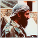
Osama bin Laden -- Leader of Al-Qaeda; authorized the September 11th attacks. Captured by US forces on Feb. 21, 2005; convicted and sentenced to death on 2,973 counts of murder; executed in 2008.
▸ The capture: On Feb. 21, 2005, US forces captured Osama bin Laden as he crossed into Afghanistan; 3 companions were killed in ensuing firefight. Bin Laden was arraigned and extradited to the SDNY on 2,973 counts of murder among other charges.
▸ Pre-trial: Even after his capture, the lead-up to Bin Laden's trial was beset by various procedural hurdles and a jury selection process that took months as federal prosecutors sought to ensure a death sentence.
▸ Trying a terrorist: The trial saw federal authorities employ extensive measures to protect the proceedings; jurors were kept anonymous and sequestered from the public, media access was heavily controlled, and an extensive security perimeter was placed around the Manhattan courthouse.
▸ Zooming out: Figures like Lieberman felt little shame about employing the death penalty on an international terrorist, but anti-death penalty Democrats were far more conflicted. The expensive trial and detention of Bin Laden also led to criticisms by Republicans who wondered why Gore's prerogative was "capture" and not "kill."
Attempted bombing of Foggy Bottom -- Terror plot foiled on May 15, 2006; Jihadi terrorist flagged and intercepted en route to State Dept. in a rental car rigged with ammonium nitrate, killed after high speed chase; motive was revenge for capturing Bin Laden.
▸ The big picture: The plot was uncovered amid a wave of international terror, as attacks in cities like London and the Middle East took place seeking vengeance for the capture of Bin Laden.
Gordon Brown -- Prime Minister of Great Britain (2007-present); won a snap election shortly after succeeding Tony Blair. In close contact with the President amid the subprime mortgage crisis.
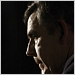
▸ Not flash: After a decade serving under Blair, Brown's campaign for a renewed majority succeeded in casting his Tory opponent David Cameron as too PR-focused and unprepared to deal with the gritty business of running Britain.
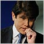
Rod Blagojevich -- Governor of Illinois (2003-2007), convicted felon (2008-present). Defeated in 2006 by Judy Baar Topinka amid various scandals.
Mike Bloomberg -- Founder and CEO of Bloomberg L.P.; his billions couldn't make him Mayor of New York in the aftermath of 9/11, but maybe they can make Lieberman president.
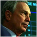
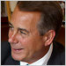
John Boehner -- Speaker of the House (2007-present); after the sudden downfall of Tom DeLay, Republicans searched for a reformer who could wipe off the scandal. Boehner was the perfect fit, though he's not as conservative as his whole caucus.
Boxer-Dingell Act -- President Gore's landmark environmental legislation (enacted 2003); invests billions into clean infrastructure and technology. Since its enactment, it has been an effective target for Republican attacks.
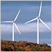
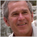
George W. Bush -- Senator from Texas (2007-present); the former governor (1995-2003) has finally found his way to Washington, although he seems to have mixed up the words "Senator" and "Minister" along the way.
Ramsey Clark -- Former Attorney General (1966-1969); in recent years an apologist of Milosevic and other such figures, and defense counsel to Osama bin Laden.
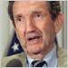
Guantanamo Bay -- Our little slice of Cuba, this shadowy military base that Clinton once used to house refugees is now home to… aliens? Osama bin Laden? Theories abound on Facebook.
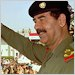
Saddam Hussein -- Dictator of Iraq (1979-present); enemy of humanity. The past two administrations have targeted him with air raids and missiles, but it seems his regime could only die with him.
Iran -- Notorious Shia theocracy in the Middle East and a state sponsor of terror, though they have provided aid in the fight against the Taliban. Gore's work on a nuclear deal with them has long drawn skepticism from both sides of the aisle.
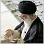
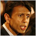
Bobby Jindal -- Governor of Louisiana (2008-present); cleaning up Gore and Kathleen Blanco's mess after Hurricane Katrina has made Jindal a conservative celebrity.
James Johnson -- Treasury Secretary (2001-2008); Johnson's past in the same companies that caused the housing crisis have made him persona-non-grata in public life. In no world could he have stayed in Washington.
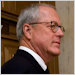
Elena Kagan -- Chief Justice of the Supreme Court; former Solicitor General (2001-2005); appointed by Gore in 2005 to replace Rehnquist; confirmed 63-37.
Kwame Kilpatrick -- Mayor of Detroit (2002-2006); burdened by scandal, it took the President intervening for him to narrowly lose re-election.
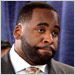
Kim Jong-il -- Dictator of North Korea (1994-present); Gore has done everything possible to keep him from building the bomb. So far it's working out.
Elizabeth Kucinich -- Organic food and peace activist, originally from London; wife of Dennis Kucinich (m. 2005).
Terry McAuliffe -- Former DNC chair; friend of the Clintons and the Democrats' ambassador to the upper class.
Cynthia McKinney -- Former congresswoman from Georgia (1993-2004), Green Party nominee; went nuts a long time ago.
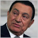
Hosni Mubarak -- Dictator of Egypt (1981-present); in recent years, the President has been a key lifeline for him in an increasingly turbulent Middle East.
No Child Left Behind -- Gore's landmark education reform (enacted 2001); gave teachers more money tied to strict standardized testing. Seven years on, reading scores are still stagnant.
Patients' Bill of Rights -- To date Gore's principal healthcare reform (enacted 2003); forbids HMOs from blocking patients from the ER, and allows patients to sue them for denying care. While relatively minor, it has earned the ire of the insurance industry.
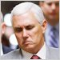
Mike Pence -- Representative from Indiana (2001-present); known for being a Gore impeachment manager. A fodder for SNL impressions, but Republicans are warm to his steely gaze.
Vladimir Putin -- Former President of Russia (1999-2008); his time in office was defined by a consolidation of power reaching beyond his own borders. Perhaps Medvedev taking charge will stem the tide on this front?
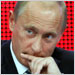
"Romneycare" -- Gov. Romney's landmark healthcare reform (enacted 2006); established a health insurance exchange, employer requirements, and subsidized plans for low-income persons; notably though, it does not include an individual mandate.
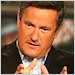
Joe Scarborough -- Former representative (1995-2001); GOP contender in 2004; now a Fox News host. In his time on cable, he's found the Republican base would rather be his viewers than his voters.
Larry Summers -- Former Treasury Secretary (1999-2001); his work in mitigating the Asian crisis earned him many plaudits, but Gore's feud with him has kept him out of the loop since then.
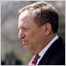
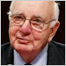
Paul Volcker -- Former Chairman of the Federal Reserve (1979-1987), Treasury Secretary (2008-present); an economic wizard credited with killing the inflation of the late 70s. Can he work his magic again?
Diane Wood -- Associate Justice of the Supreme Court; former Judge for the 7th Circuit (1995-2008); appointed by Gore in 2008 to replace Souter; confirmed 60-40.
by /u/astrohunch_o, /u/StockdaleforTCT, /u/neo1013, and TedThing
A 21st Century TVTV production